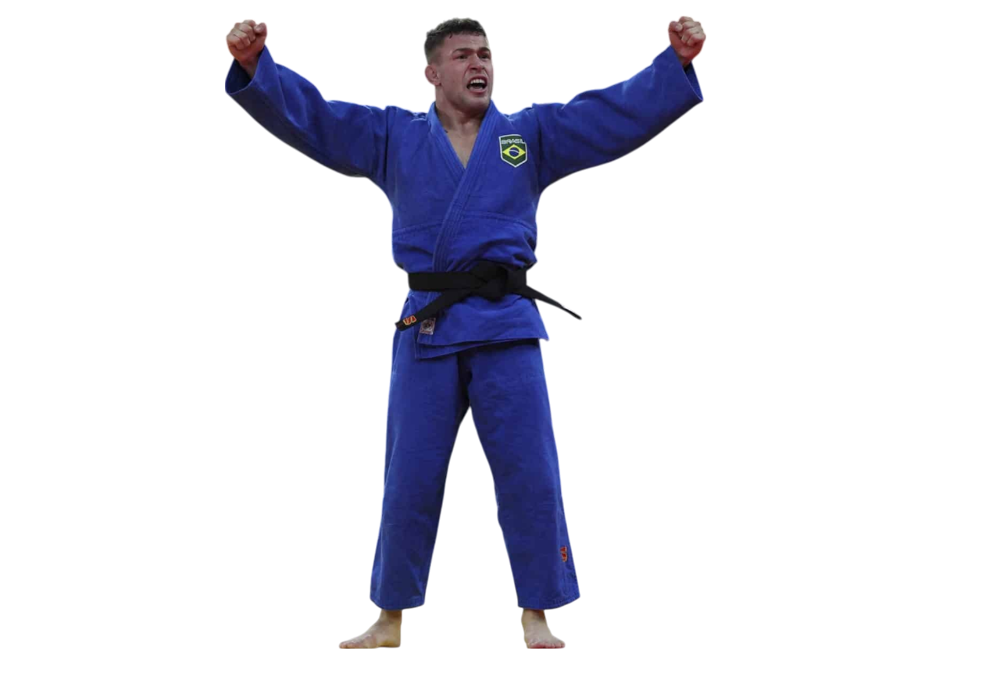
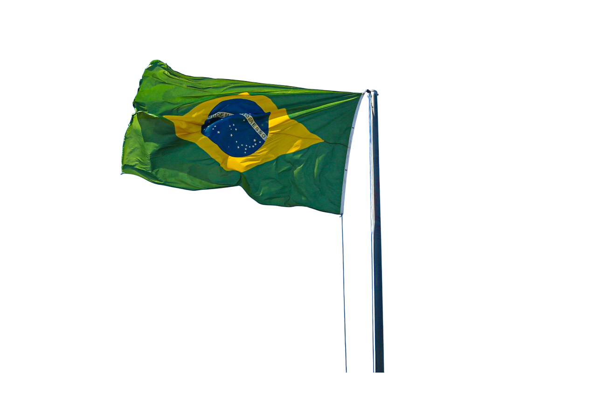
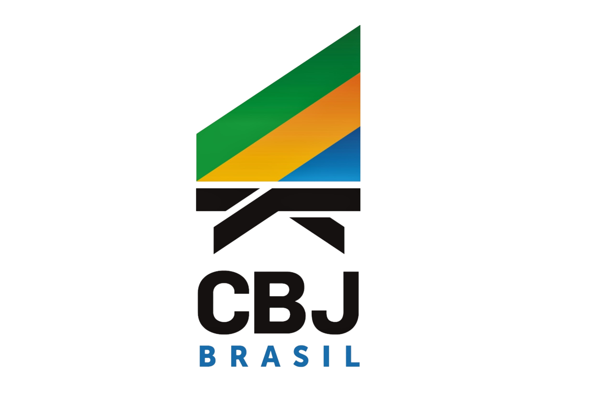
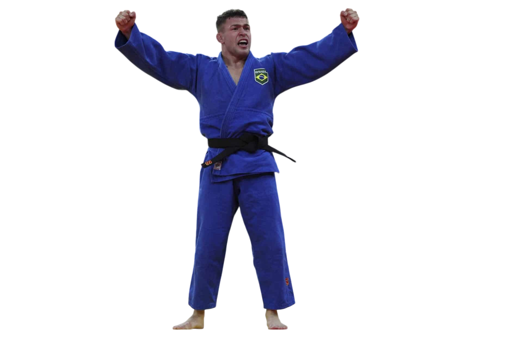
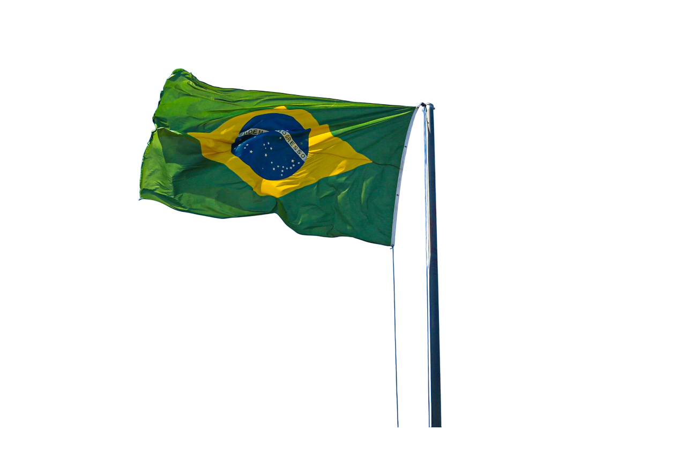
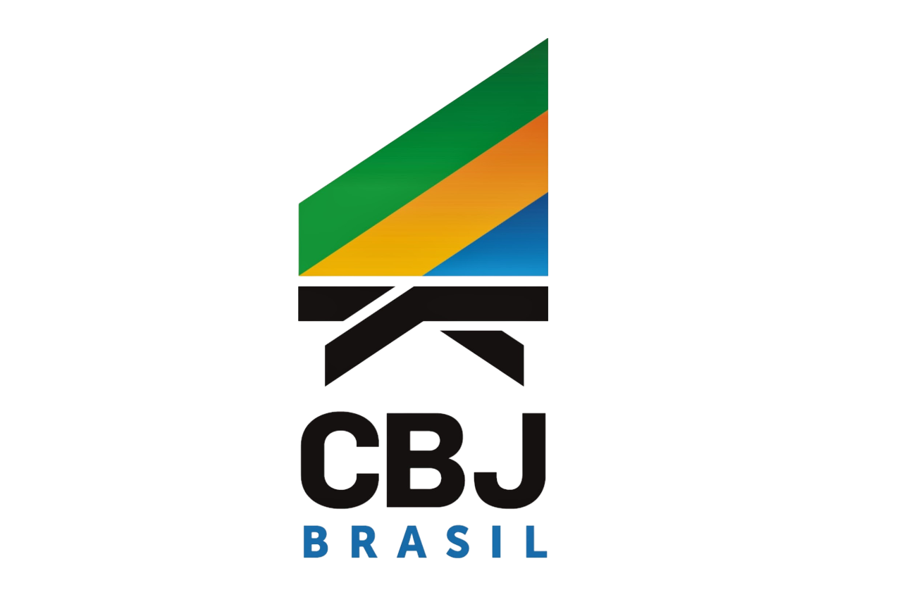

This composition was designed to represent the symbolic journey of triumph, discipline, and national pride through the figure of William Lima, a top-tier athlete of the Brazilian national judo team.
The artwork combines visual storytelling and institutional art direction, blending light, national elements, and posture to evoke emotion and strength.
Concept:
The goal was to translate the emotion of victory into a
visually cinematic composition, merging symbolic scenery with realistic athlete presence.


 





Thanks for scrolling! I hope my art inspired you in some way..
Obrigado por chegar até aqui! Espero que minha arte tenha te inspirado de alguma forma.
Created by Arthur morais — 2025 All visuals developed in Photoshop